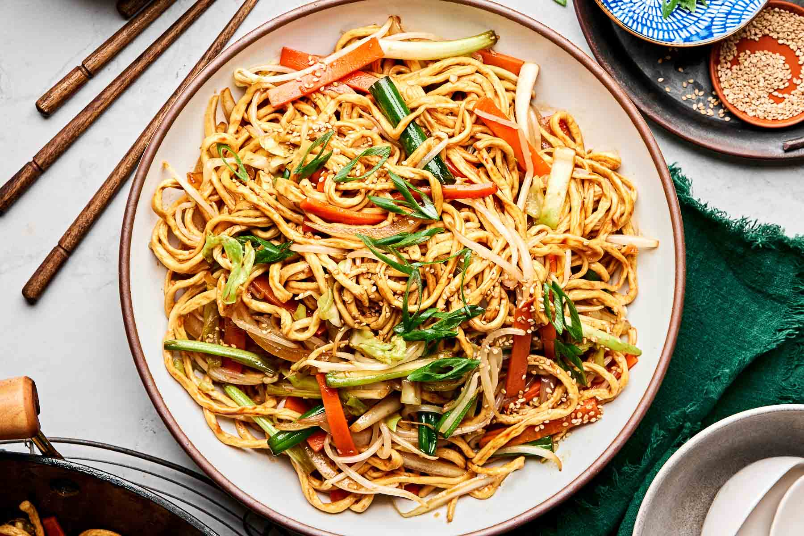

🍜Try this quick and tasty 15-minute vegetable stir-fry
noodles — perfect for a busy evening!
15-Minute Vegetable Stir-Fry Noodles
Ingredients:
- Sauce:
- ⅓ cup water
- 4 tbsp soy sauce
- 1 tbsp rice vinegar
- 1 tbsp maple syrup
- 1 tsp grated ginger
- ½ tsp chili flakes
- Stir-fry:
- 10 oz uncooked noodles (any kind you like)
- 2 tbsp sesame oil
- 2 garlic cloves, minced
- 2 green onions, sliced
- 2 carrots, sliced
- 1 red bell pepper, sliced
- 2 cups mushrooms, sliced
- 2 cups broccoli florets
- Sesame seeds and extra green onion for garnish
Instructions:
- Make the sauce: Mix all sauce ingredients in a
small bowl or jar.
- - Prep the veggies: Wash and chop them into
similar-sized strips.
- - Stir-fry: Heat sesame oil in a large pan or wok
over high heat. Add garlic and green onions, cook for
30 seconds. Add veggies and stir-fry for 5 minutes
until softened.
- - Cook noodles: Soak in hot water as per package
instructions, then drain.
- - Combine: Add noodles and sauce to the pan. Toss
everything together for 2 minutes.
- - Serve: Sprinkle with sesame seeds and green
onion.
Nutrition
| Calories: 294 kcal |
Protein: 8.2g |
| Fat: 5.9g |
Carbohydrates: 53g |
| Cholesterol: 0mg |
Sodium: 917mg |
| Potassium: 601.9mg |
Iron: 1.9mg |
| Calcium: 84mg |
Vitamin A: 60ug (7% DV) |